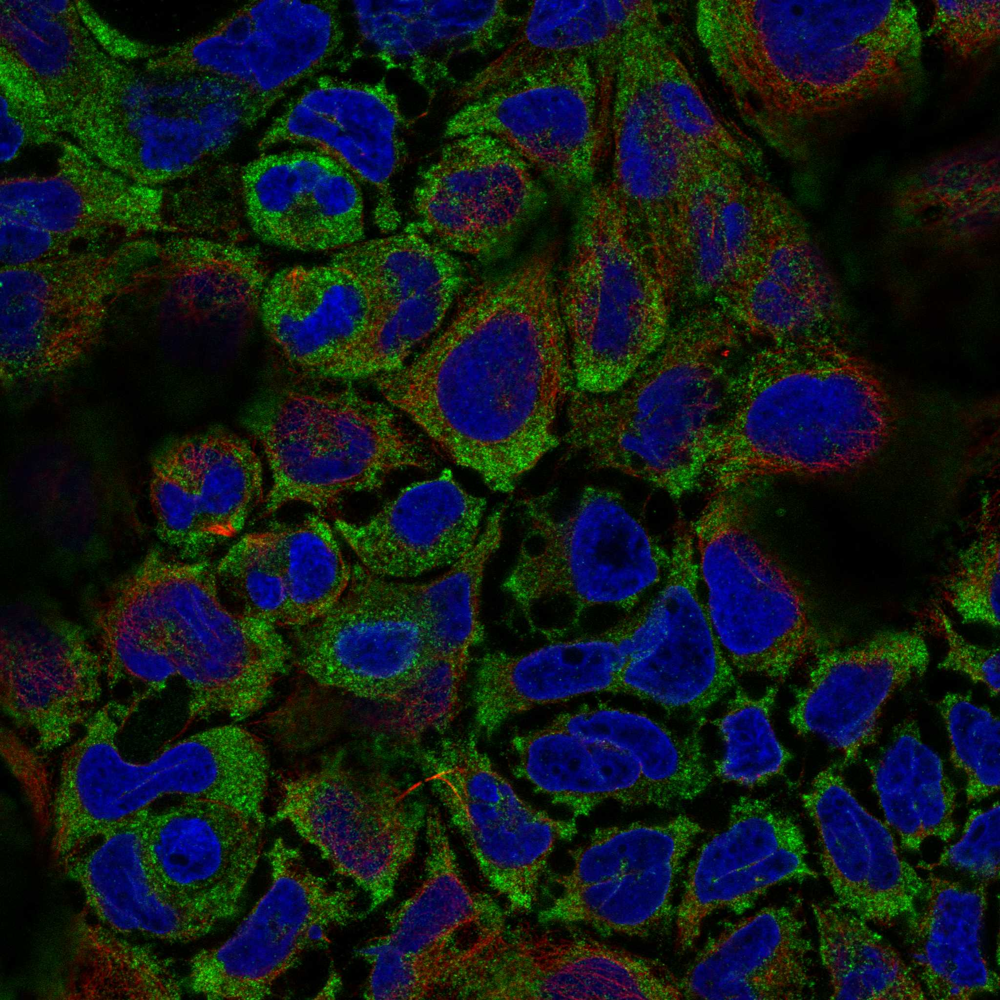
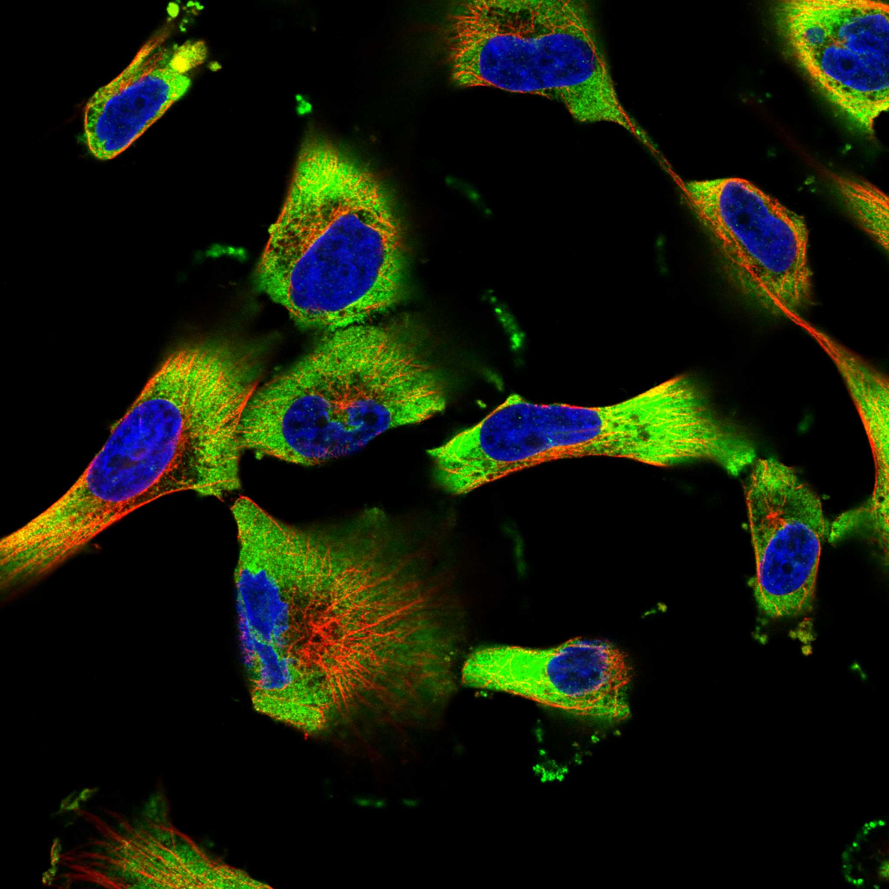
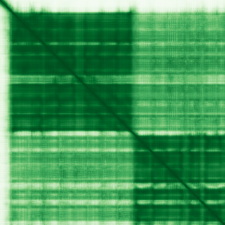

type: protein-evaluation gene: "EIF4A2" date: 2026-06-03 tags: [protein-scout, nuclear-protein, evaluation] status: scored ---
EIF4A2 核蛋白评估报告 (Full Re-evaluation)
1. 基本信息
| 项目 | 内容 |
|---|---|
| 基因名 / 别名 | EIF4A2 / DDX2B, EIF4F |
| 蛋白名称 | Eukaryotic initiation factor 4A-II |
| 蛋白大小 | 407 aa / 46.4 kDa |
| UniProt ID | Q14240 |
| 评估日期 | 2026-06-03 |
IF 图像:  
2. 评分总览
| 维度 | 得分 | 满分 | 加权后 | 关键证据摘要 |
|---|---|---|---|---|
| 核定位特异性 | 4/10 | ×4 | 16 | HPA: Cytosol; UniProt: 无注释 |
| 蛋白大小 | 10/10 | ×1 | 10 | 407 aa / 46.4 kDa |
| 研究新颖性 | 2/10 | ×5 | 10 | PubMed strict=92 篇 (≤100→2) |
| 三维结构 | 8/10 | ×3 | 24 | AlphaFold v6 pLDDT=86.4; PDB: 3BOR |
| 调控结构域 | 8/10 | ×2 | 16 | InterPro: IPR011545, IPR044728, IPR014001, IPR001650, IPR027 |
| PPI 网络 | 3/10 | ×3 | 9 | STRING 15 partners; IntAct 15 interactions |
| 互证加分 | — | max +3 | 2.0 | PDB+AF+STRING+IntAct cross-validation |
| 原始总分 | 87.0/180 | |||
| 归一化总分 | 48.3/100 |
3. 详细分析
3.1 核定位证据
| 来源 | 定位 | 可信度 |
|---|---|---|
| Protein Atlas (IF) | Cytosol | Approved |
| UniProt | 无注释 | Swiss-Prot/TrEMBL |
IF 图像获取: IF图像已下载并嵌入 (2张)
GO Cellular Component:
- cytosol (GO:0005829)
- eukaryotic translation initiation factor 4F complex (GO:0016281)
- perinuclear region of cytoplasm (GO:0048471)
结论: 核定位信号较弱，多个数据源显示混合定位或非核偏好。
3.2 蛋白大小评估
评价: 大小适中（200-800 aa），适合常规生化实验和结构解析。
3.3 研究现状
| 指标 | 数值 |
|---|---|
| PubMed strict count | 92 |
| PubMed broad count | 113 |
| 别名(未计入scoring) | Aliases observed but not used for scoring: DDX2B, EIF4F |
关键文献: 1. LncRNA H19 governs mitophagy and restores mitochondrial respiration in the heart through Pink1/Parkin signaling during obesity.. *Cell death & disease*. PMID: 34050133 2. RBM12 drives PD-L1-mediated immune evasion in hepatocellular carcinoma by increasing JAK1 mRNA translation.. *Oncogene*. PMID: 39187545 3. Critical and differential roles of eIF4A1 and eIF4A2 in B-cell development and function.. *Cellular & molecular immunology*. PMID: 39516355 4. Dystonia Linked to EIF4A2 Haploinsufficiency: A Disorder of Protein Translation Dysfunction.. *Movement disorders : official journal of the Movement Disorder Society*. PMID: 37485550 5. Molecular cloning, mapping, and expression analysis of the EIF4A2 gene in pig.. *Biochemical genetics*. PMID: 17226078
评价: 研究基础较多，新颖性有限。
3.4 三维结构分析
| 指标 | 数值 |
|---|---|
| AlphaFold 版本 | v6 |
| AlphaFold 平均 pLDDT | 86.4 |
| 高置信度残基 (pLDDT>90) 占比 | 60.2% |
| 置信残基 (pLDDT 70-90) 占比 | 27.5% |
| 中等置信 (pLDDT 50-70) 占比 | 7.4% |
| 低置信 (pLDDT<50) 占比 | 4.9% |
| 有序区域 (pLDDT>70) 占比 | 87.7% |
| 可用 PDB 条目 | 3BOR |
PAE (Predicted Aligned Error): 
评价: AlphaFold 极高置信度预测（pLDDT=86.4，有序区 87.7%），结构可靠。
3.5 结构域分析
| 来源 | 结构域 |
|---|---|
| InterPro/Pfam | InterPro: IPR011545, IPR044728, IPR014001, IPR001650, IPR027417; Pfam: PF00270, PF00271 |
染色质调控潜力分析: 多个已知结构域注释，AlphaFold预测质量高，结构域折叠可信。
3.6 PPI 网络
STRING 预测互作 (combined score >0.4):
| Partner | Combined Score | Experimental | 功能类别 |
|---|---|---|---|
| EIF4G2 | 0.999 | 0.718 | — |
| EIF4B | 0.999 | 0.534 | — |
| EIF4G3 | 0.999 | 0.875 | — |
| EIF4G1 | 0.999 | 0.872 | — |
| PABPC1 | 0.999 | 0.269 | — |
| PDCD4 | 0.999 | 0.684 | — |
| EIF4E | 0.999 | 0.517 | — |
| EIF4H | 0.997 | 0.240 | — |
| PAIP1 | 0.995 | 0.425 | — |
| EIF4A1 | 0.994 | 0.836 | — |
实验验证互作 (IntAct):
| Partner | 方法 | PMID | ||
|---|---|---|---|---|
| ENSP00000326381.5 | psi-mi:"MI:0397"(two hybrid array) | imex:IM-23318 | pubmed:25416956 | |
| ACTB | psi-mi:"MI:0071"(molecular sieving) | pubmed:15047060 | ||
| EIF4G2 | psi-mi:"MI:0004"(affinity chromatography technolog | pubmed:11172724 | ||
| DDX24 | psi-mi:"MI:0398"(two hybrid pooling approach) | pubmed:16169070 | imex:IM-16517 | |
| CLNS1A | psi-mi:"MI:0398"(two hybrid pooling approach) | pubmed:16169070 | imex:IM-16517 | |
| EBI-1045031 | psi-mi:"MI:0006"(anti bait coimmunoprecipitation) | pubmed:17353931 | ||
| P4HB | psi-mi:"MI:0006"(anti bait coimmunoprecipitation) | pubmed:17353931 | ||
| CMBL | psi-mi:"MI:0006"(anti bait coimmunoprecipitation) | pubmed:17353931 | ||
| EIF4G1 | psi-mi:"MI:0006"(anti bait coimmunoprecipitation) | pubmed:17353931 | ||
| 13514813 | psi-mi:"MI:0006"(anti bait coimmunoprecipitation) | pubmed:17353931 |
PPI 互证分析:
- STRING + IntAct 均有数据
- STRING partners: 15，IntAct interactions: 15
- 调控相关比例: 2 / 15 = 13%
评价: STRING 15 个预测互作，IntAct 15 个实验互作。调控相关配体占比 13%。
3.7 多库互证
| 维度 | 来源 | 结果 | 是否一致 |
|---|---|---|---|
| 三维结构 | AlphaFold pLDDT=86.4 + PDB: 3BOR | pLDDT=86.4, v6 | 预测+实验 |
| 定位 | UniProt + HPA | 无注释 / Cytosol | 一致 |
| PPI | STRING + IntAct | 15 + 15 interactions | 数据充分 |
互证加分明细:
- PDB + AlphaFold 双源验证: +0.5
- 多库定位一致 (2源): +0.5
- STRING + IntAct 双源验证: +0.5
- 结构域 + AlphaFold 质量: +0.5
- PDB 多条目覆盖: +0
总分: +2.0 / max +3
4. 总体评价
推荐等级: ⭐⭐
核心优势: 1. EIF4A2 — Eukaryotic initiation factor 4A-II，研究基础较多，新颖性有限。 2. 蛋白大小407 aa，大小适中（200-800 aa），适合常规生化实验和结构解析。
风险/不确定性: 1. PubMed 92 篇，已有一定研究基础 2. 结构数据质量可接受
下一步建议:
- [ ] 查阅最新关键文献补充研究背景
- [ ] 获取 Protein Atlas IF 图像确认亚细胞定位
- [ ] 设计体外实验验证核定位及潜在调控功能
5. 数据来源
- UniProt: https://www.uniprot.org/uniprotkb/Q14240
- Protein Atlas: https://www.proteinatlas.org/ENSG00000156976-EIF4A2/subcellular
- PubMed: https://pubmed.ncbi.nlm.nih.gov/?term=EIF4A2
- AlphaFold: https://alphafold.ebi.ac.uk/entry/Q14240
- STRING: https://string-db.org/network/9606.ENSP00000
- Data fetched live: 2026-06-03
<!-- DOMAIN_HUMANPPI_REPAIR_START -->
Domain/SMART 与 humanPPI 补充（2026-06-07）
SMART / UniProt domain
| Source | Data | ||
|---|---|---|---|
| UniProt | Q14240 | ||
| SMART | SM00487;SM00490; | ||
| UniProt Domain [FT] | DOMAIN 64..235; /note="Helicase ATP-binding"; /evidence="ECO:0000255\ | PROSITE-ProRule:PRU00541"; DOMAIN 246..407; /note="Helicase C-terminal"; /evidence="ECO:0000255\ | PROSITE-ProRule:PRU00542" |
| InterPro | IPR011545;IPR044728;IPR014001;IPR001650;IPR027417;IPR000629;IPR014014; | ||
| Pfam | PF00270;PF00271; |
humanPPI / HPA Interaction
Source: https://www.proteinatlas.org/ENSG00000156976-EIF4A2/interaction
| Partner | Datasets | AF3/HPA structure |
|---|---|---|
| EIF3G | Biogrid, Opencell | true |
| EIF3H | Intact, Biogrid | true |
| EIF4E | Intact, Biogrid | true |
| EIF4G1 | Intact, Biogrid | true |
| EIF4G2 | Intact, Biogrid | true |
| HSPB1 | Intact, Biogrid | true |
| IPO11 | Intact, Biogrid | true |
| PDCD4 | Intact, Biogrid | true |
<!-- DOMAIN_HUMANPPI_REPAIR_END -->